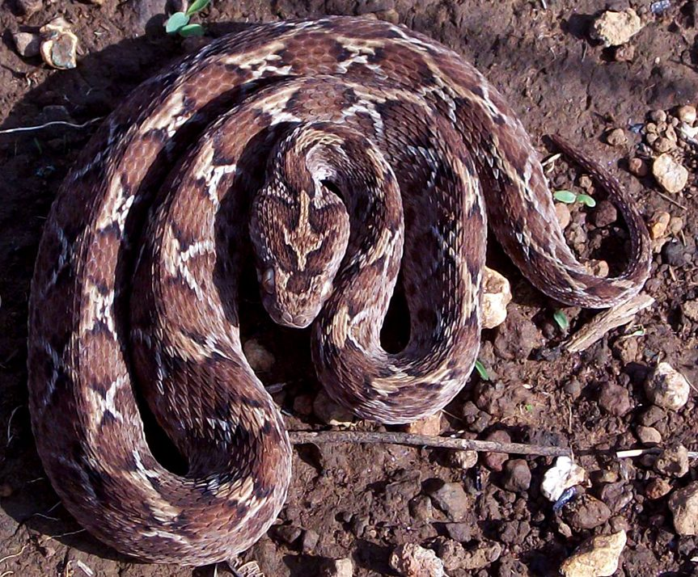

फुरसाSaw-scaled Viper
Echis carinatus · Viperidae · REP-0011

- Scientific name
- Echis carinatus (Schneider, 1801)
- Family
- Viperidae
- Hindi
- फुरसा
- Status here
- native
- IUCN
- LC
When to look कब देखें
Present all year.
फुरसा / Saw-scaled Viper
Echis carinatus (Schneider, 1801) — Viperidae
फुरसा (सॉ-स्केल्ड वाइपर) — भारत का एक छोटा लेकिन अत्यंत विषैला सांप है, जो भारत के "बिग फोर" विषैले सांपों में सबसे छोटा सदस्य है। इसका आकार आमतौर पर केवल 38 से 55 सेंटीमीटर होता है। इसका सिर त्रिकोणीय होता है, जिस पर एक विशिष्ट सफेद रंग का निशान होता है जो त्रिशूल या पक्षी के पैर (trident-like pattern) जैसा दिखता है। यह सांप शुष्क, रेतीले और पथरीले क्षेत्रों में, विशेष रूप से घाघरा नदी के रेतीले किनारों पर पाया जाता है। जब इसे खतरा महसूस होता है, तो यह अपने शरीर को कुंडलियों में समेटकर अपनी खुरदरी और आरी जैसी शल्कों (serrated scales) को आपस में रगड़ता है, जिससे सूखी पत्तियों के सरसराने जैसी तेज आवाज ("sawing" sound) पैदा होती है। इसका जहर रक्त-विघटनकारी (haemotoxic) होता है और छोटे आकार के बावजूद यह इंसानों के लिए जानलेवा है।
Quick Identification त्वरित पहचान
| Feature | Description |
|---|---|
| Size | Small, stout snake; total length 38–55 cm; tail is very short and thin |
| Head | Distinctly triangular, pear-shaped, and covered with small scales; marked with a white trident-like symbol on top |
| Markings | Pale wavy lateral line on the sides; dark brown spots on the back with white edges |
| Scales | Heavily keeled; lateral scales are arranged in oblique rows and carry serrated (saw-like) ridges |
| Eyes | Large, golden-brown with vertical, slit-like pupils |
| Movement | Sidewinding locomotion on loose sand; leaves J-shaped tracks |
| Defence | Coils into a figure-eight configuration and rubs its lateral scales together to produce a loud, continuous sawing sound |
Field tip: Any small, thick-bodied snake (under 60 cm) with a white trident-shaped mark on its head, vertical pupils, and which makes a loud rasping sound by rubbing its coils together is a Saw-scaled Viper. It is highly aggressive when disturbed and strikes rapidly. Do not attempt to handle.
Morphology आकारिकी
Biometrics (typical measurements for adult specimens in dry river basin zones of northern India):
| Measurement | Range |
|---|---|
| Tail length | 4–6 cm |
| Total length | 38–55 cm |
| Weight | 80–150 g |
Dorsal pattern: The ground colour varies from grey, sandy-grey, to reddish-brown. The back has a series of 30–40 small, whitish spots outlined in dark brown. A pale, wavy or zig-zag white line runs along each side of the body. The belly is white or cream, speckled with small dark brown spots. The head features a distinct light-coloured trident or bird-foot pattern on a darker background.
Scales: Midbody dorsal scales are in 25–39 rows, highly keeled. The lateral scales are smaller, pointing downward at an angle, and are serrated. The head scales are very small, with no large shields.
Fangs: Solenoglyphous dentition. Carries a pair of long, hollow, highly mobile fangs on the rotational maxillary bone at the front of the mouth. The fangs are relatively large for the snake's small body size, measuring 5–7 mm in length.
Behaviour & Ecology व्यवहार और पारिस्थितिकी
Nocurnal and sidewinding specialist.
- Locomotion: Excellent at moving over loose sand using sidewinding. The snake pushes its body sideways, leaving a characteristic series of parallel, J-shaped tracks.
- Threat display: When threatened, it does not flee or hiss. Instead, it coils into a figure-of-eight and rubs its oblique, serrated lateral scales against each other. The friction produces a loud, rasping sawing sound (stridulation) that warns predators.
- Aggressive defence: Extremely alert and quick to strike if approached closely. Because of its small size, it is easily overlooked, and its strike range is surprisingly long.
Ecological Role पारिस्थितिक भूमिका
Arthropod and vertebrate predator. The Saw-scaled Viper occupies a unique ecological niche in the dry, sandy ecosystems of Basti. Unlike larger vipers, its diet consists of a high percentage of large arthropods (scorpions, centipedes, and beetles) alongside small rodents, lizards, and frogs. It plays an important role in controlling invertebrate and small vertebrate populations in riverine grasslands.
Life Cycle / Phenology जीवन चक्र
- Breeding: Mating takes place during the spring months (March–April).
- Reproduction: Widespread populations in northern India are viviparous (giving birth to live young).
- Birth: Females give birth to a litter of 4 to 12 young between July and September (during the peak of the monsoon).
- Young: Newborn young are 11–15 cm long and are immediately independent and fully venomous.
Host Plants or Prey आहार
Carnivorous and insectivorous diet:
- Invertebrate prey: Large scorpions, centipedes, grasshoppers, and beetles.
- Vertebrate prey: Small field mice (Mus musculus), geckos, garden lizards (
[REP-0001 Garden Lizard]), and small frogs (such as[AMP-0005 Ornate Narrow-mouthed Frog]).
Predators / Natural Enemies शत्रु
- Mongoose: The Indian Grey Mongoose (
[MAM-0002 Mongoose]) regularly preys on this species, using speed to avoid the quick strike. - Raptors: Ground-hunting birds like the Crested Serpent Eagle and Black-winged Kite (
[BRD-0038 Black-winged Kite]) hunt vipers in open riverbeds.
Agricultural / Human Relevance कृषि प्रासंगिकता
Bites in riverine farming. Accidental bites from Saw-scaled Vipers are common among agricultural labourers working in sandy peanut, melon, or vegetable plots near the Ghaghra riverbed. Because the snake is small and hides under dry grass or clods of earth, workers collecting wood or hand-weeding often touch them accidentally.
Safety and First Aid सुरक्षा और प्राथमिक चिकित्सा
[!WARNING]
Venom type: Highly haemotoxic. The venom contains metalloproteinases and procoagulants that cause severe coagulopathy (loss of blood clotting ability), leading to active bleeding from the gums, nose, and old wounds. Left untreated, it can cause internal brain haemorrhage and acute renal failure.
Underestimation risk: Because of its small size, victims sometimes ignore the bite, thinking it is from a non-venomous snake. This delay is highly dangerous.
Prevention rules:
- Wear protective shoes when walking in sandy, dry grasslands or riverbeds.
- Do not reach into rock piles or dry leaf heaps without checking with a stick.
- Use a flashlight at night in sandy rural pathways.
First aid rules (in case of a bite):
- DO NOT apply a tourniquet, tie a tight string, or cut the wound. Haemotoxic venom causes localized swelling and tissue necrosis; restricting blood flow concentrates these toxins and worsens local tissue destruction.
- DO NOT try to suck the venom out.
- DO keep the victim calm and reassure them. Fear increases heart rate, spreading the venom faster.
- DO immobilize the bitten limb using a splint and keep it below the level of the heart.
- DO transport the patient immediately to the nearest Community Health Center (CHC) or District Hospital that stocks Polyvalent Anti-Snake Venom (ASV). ASV is the only effective treatment.
Expected Locally स्थानीय रूप से अपेक्षित
Not a field record. Written from published accounts for eastern Uttar Pradesh. No confirmed local sighting yet — if you have seen it, that is what the atlas needs.
अभी तक स्थानीय पुष्टि नहीं। यह विवरण प्रकाशित स्रोतों से है, किसी अवलोकन से नहीं।
Commonly found in the sandy banks, alluvial islands (diara zones), and adjacent dry scrub areas along the Ghaghra River in Vikramjot and Vikrampur blocks of Basti district. Sighted frequently in dry brick kilns and under piles of building stones during the late monsoon.
Distribution वितरण
Global range: Distributed across the Middle East, Central Asia, and South Asia (including Pakistan, India, Nepal, and Sri Lanka).
In India: Widespread in dry, arid, and semi-arid regions. Particularly common in western India, the Deccan Plateau, and dry plains of northern India.
In Uttar Pradesh: Found in dry, sandy plains along major river systems.
In Basti district / eastern UP: Locally abundant in sandy river basin zones and dry scrub borders.
Research Questions शोध प्रश्न
- How does the population density of Echis carinatus vary between the wet monsoon plain and the dry winter riverbed in Basti? / बस्ती में मानसून की बाढ़ और सर्दियों के शुष्क मौसम में फुरसा सांप के निवास स्थान में क्या बदलाव आते हैं?
- What is the percentage of insect and arachnid prey in the diet of juvenile Saw-scaled Vipers compared to adult snakes? / वयस्क सांपों की तुलना में छोटे फुरसा सांपों के भोजन में कीड़े-मकोड़ों का प्रतिशत कितना होता है?
- Does the obliqueness of lateral scales in Echis carinatus vary between populations in northern sand riverbeds and western rocky plateaus?
- What are the most common traditional beliefs regarding Echis carinatus in Basti, and how do they impact clinical treatment seek-times? / बस्ती में फुरसा सांप से जुड़े पारंपरिक अंधविश्वास अस्पताल में सही इलाज शुरू करने में क्या बाधाएं उत्पन्न करते हैं?
- Can local school children identify the sawing sound of a Saw-scaled Viper from an audio recording? — A simple safety education study.
Similar Species मिलती-जुलती प्रजातियाँ
| Species | Key Difference | हिंदी |
|---|---|---|
Daboia russelii (Russell's Viper [REP-0010]) | Much larger (100–140 cm); distinct chain-like dark oval spots on the back; makes a loud pressure-cooker-like hiss; lacks the head trident mark. | कोरिआला — बड़ा आकार, जंजीर जैसी आकृतियां |
| Boiga trigonata (Common Cat Snake) | Harmless; slender body; head has a dark Y-shaped mark; long thin tail; lacks serrated lateral scales and oblique scale rows. | कैट स्नेक — हानिरहित, लंबी पूंछ |
Lycodon aulicus (Common Wolf Snake [REP-0012]) | Harmless; has distinct white/cream bands across a dark brown body; head is flat and lacks any trident mark; pupils are vertical. | कौड़िया साँप — हानिरहित, सफेद पट्टियां |
Taxonomy & Classification वर्गीकरण
Original description. Johann Gottlob Schneider described the Saw-scaled Viper as Pseudoboa carinata in 1801 in Historiae Amphibiorum naturalis et literariae (Vol. 2, p. 256). The type locality was Arni, India. It was later placed in the genus Echis Merrem, 1820. The genus name Echis is the Greek word for "viper" (ἔχις). The specific name carinatus is Latin for "keeled," referring to the strongly ridged dorsal scales.
Subspecies. The South Asian population is designated as the nominate subspecies, Echis carinatus carinatus (Schneider, 1801).
Family and order placement. Placed in the order Squamata, suborder Serpentes, family Viperidae, subfamily Viperinae.
Phylogenetic notes. The genus Echis is a monophyletic group of small, arid-adapted vipers. Molecular studies suggest Echis carinatus diverged from African members of the genus during the Miocene.
IUCN status rationale. Rated as Least Concern (LC) on the IUCN Red List due to its extensive distribution, abundance, and adaptability to degraded drylands and rural farming areas. It faces no major conservation threats.
Photo Gallery फोटो गैलरी
References संदर्भ
- Schneider, J. G. (1801). Historiae Amphibiorum naturalis et literariae. Vol. 2. Frommann, Jena, p. 256. [original description]
- Smith, M.A. (1943). The Fauna of British India, Ceylon and Burma: Reptilia and Amphibia. Vol. 3 — Serpentes. Taylor & Francis, London.
- Whitaker, R. & Captain, A. (2004). Snakes of India: The Field Guide. Draco Books, Chennai.
- World Health Organization (2016). Guidelines for the Management of Snakebites in Southeast Asia. WHO Regional Office, New Delhi.
- IUCN SSC Snake and Lizard Specialist Groups (2024). Echis carinatus. IUCN Red List of Threatened Species.
- Cherlin, V. A. (1990). Taxonomic revision of the snake genus Echis (Viperidae). Proceedings of the Zoological Institute, Leningrad, 223: 193-223.
- GBIF Occurrence Data — Echis carinatus, South Asia (2026). GBIF taxon key: 2443876.
Source file: species/fauna/reptiles/saw_scaled_viper.md